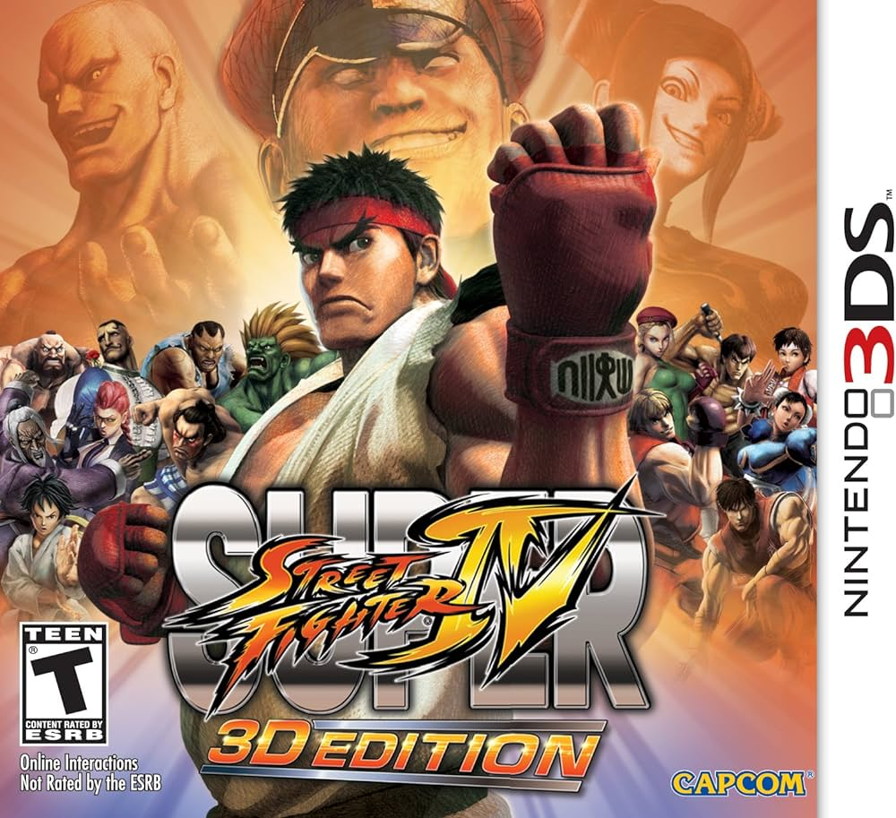
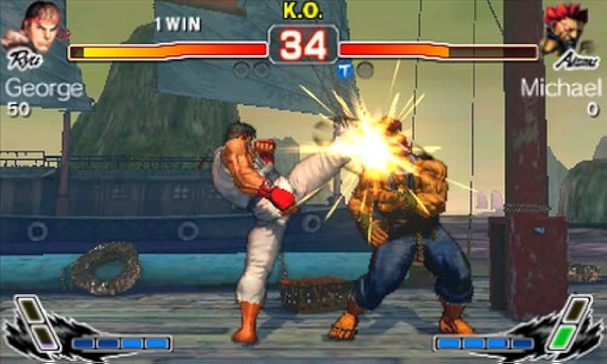
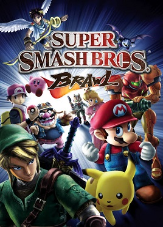
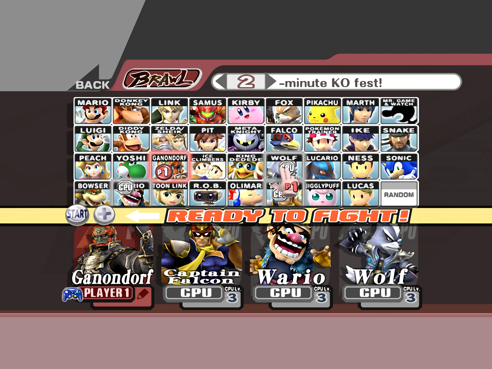
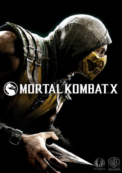
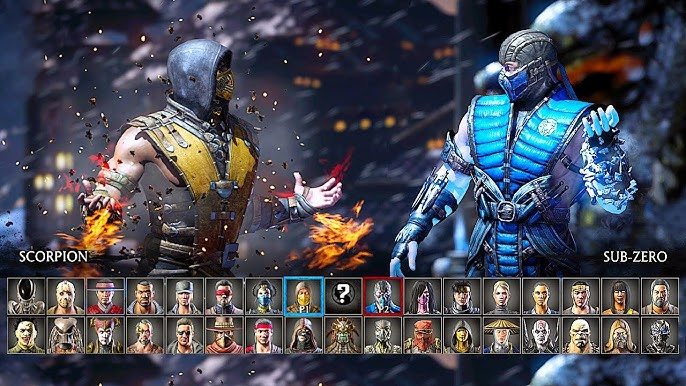
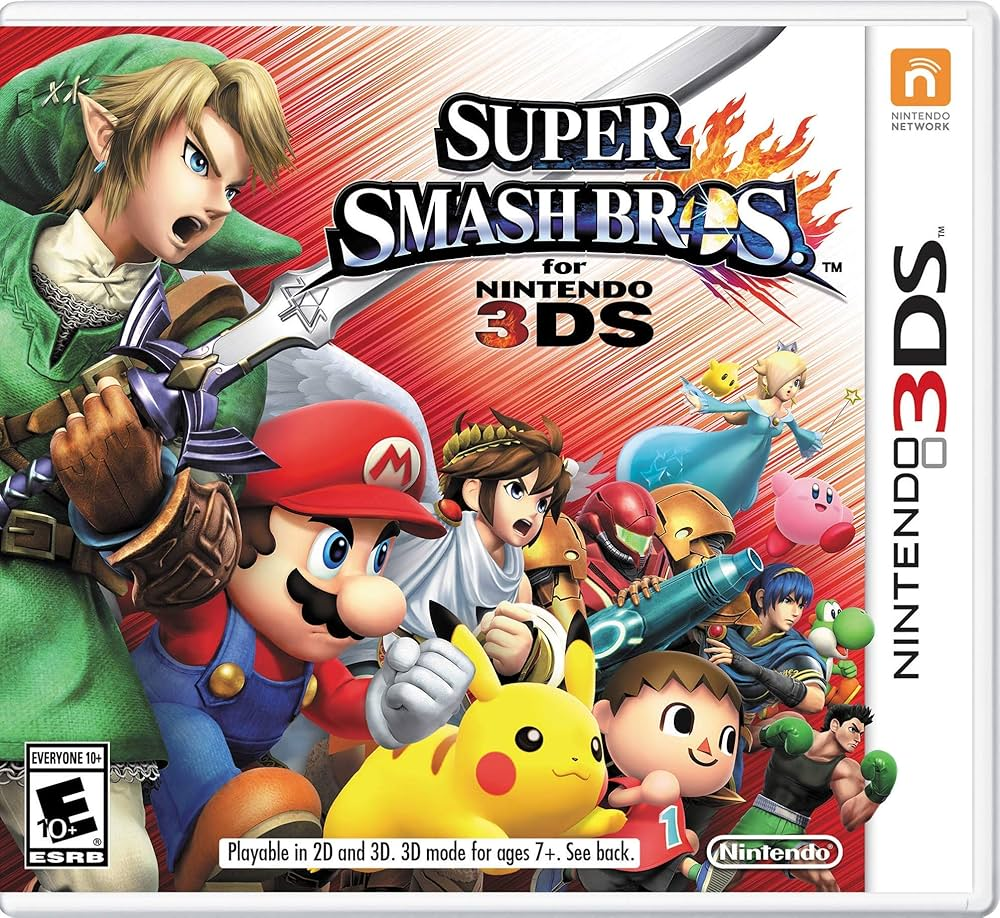
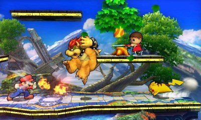

Jogos de luta (Parte 2) - 20/08/2024
Continuamos a nossa saga de falar um pouco sobre de todos os jogos de luta que já joguei
Street fighter IV (3DS)
Finalmente chegamos no tal do Street Fighter. Eu cheguei a jogar um pouco do Super Street Fighter 4 no PS3, eu lembro que o meu pai era muito bom e eu era muito ruim
Mas a versão desse jogo que mais joguei foi a de 3DS, e mesmo assim não joguei muito, mas me marcou bastante
Se você perceber, todos os jogos até então não tem uma coisa: motion inputs
Você não precisa fazer meia lua pra jogar smash, e a maior parte dos motion inputs do MK são fáceis de executar: cima baixo, frente frente, baixo trás (note como não precisa da diagonal, deixando o movimento MUITO mais fácil)
Não só isso, Street Fighter é um jogo de 6 botões, você tem três chutes e três socos. Isso é resquício dos tempos de arcade, e sinceramente fica estranho num controle moderno
Eu joguei e joguei e joguei, e não conseguia me dar bem com Street Fighter. Pra mim pareceu uma eternidade, mas eu devo ter jogado esse jogo por umas 20 horas no máximo
Era frustrante, e ajudou a cimentar a ideia de que eu era incapaz de jogar essa franquia. Era de mais pra mim
Hoje já não tenho mais isso, mas fiquei muito tempo sem tentar Street Fighter por esse motivo
Eu tinha dificuldade de completar o modo arcade, isso que nessa versão você ainda podia soltar alguns especiais usando o touch screen do 3DS. Ainda assim, eu apanhava muito
Pra mim, eu tinha nascido pra jogar Mortal Kombat 😄


Esse jogo foi uma das experiências mais frustrantes que já tive com jogos de luta, e meio que me convenceu que o gênero não era pra mim
Super Smash Bros. Brawl
Fazia muito tempo que eu não jogava Smash, então o Brawl foi um grande retorno pra mim. Eu acho que nessa altura do campeonado, o Smash de Wii U já tinha saído, então eu já tinha uns 15-16 anos
Mas poxa, um jogo de Wii U em 2015? Bom, eu demorei muito pra conseguir um Nintendo Wii, foi só bem tarde que consegui trocar meu PS2 por um (uma boa troca? Não sei, mas pra mim valeu muito)
E foi aí que joguei esse Smash pela primeira vez... E eu não gostei muito
Eu não sei o que aconteceu, eu achava o jogo feio, não gostava do nunchuck do Wii. Pra mim o jogo era estranho, não sei nem como descrever
Joguei um pouco, mas rapidamente parei. Eu me lembro do jogo muito vagamente, o que reflete o tempo que joguei (e meu interesse pelo jogo)
É uma pena, pq eu gostava tando dos Smash anteriores. Mas seja lá o que aconteceu com o Brawl, não se repetiu - pois eu adorei todos os Smash que vieram depois 😄


Sempre achei o Snake uma adição estranha. Achava ele muito realista perto de personagens como Mario e Sonic
Mortal Kombat X
Chegamos na era do PS4! Meus pais compraram um pra mim em 2014, fiquei muito feliz. E no ano seguinte, já lançou o próximo Mortal Kombat
Lembra como falei bem do 9? Eu certamente estava animado pra jogar o 10
E de fato, o jogo saiu e era muito bom. Lembro de gostar do modo campanha, apesar de não lembrar ao certo da história em si
Também lembro que tinha uma "nova geração" de lutadores, tipo a filha do Johnny Cage. Estranho pensar que já se faz quase 10 anos
Esse foi o jogo que começou a introduzir personagens de filmes na série... Lembro de até gostar de jogar com o Alien
Mas, sinceramente, eu acho que isso danificou um pouco a imagem da franquia. Hoje todos os clipes que vejo do jogo envolvem o Homelander, ou outro personagem de filme. Eu sinceramente não me lembro do úiltimo clipe que vi com dois personagens da franquia Mortal Kombat, hahah
Tá certo que não sigo muito as comunidades de MK hoje em dia, mas enfim. Pra mim isso ficou cansativo
O jogo também não inovou muito, era bem similar ao anterior. Mesma história no MK 11


Por mais que eu tenha gostado do MK X, ele marcou o fim do meu interesse pela série. O Mortal Kombat 1 de 2023 foi um novo soft reboot, eu tava bem interessado nele até
Mas novamente, mesma jogabilidade e personagens de filme me fizeram perder completamente o interesse
Super Smash Bros. 3DS
Smash de 3DS é sensacional - sei que tem muita gente que fala que ele é uma versão inferior do Smash de Wii U, mas como eu não tinha o Wii U, eu adorava essa versão
Acontece que até recentemente eu nem considerava Smash jogo de luta. Se você me perguntasse um tempo atrás quais eram os jogos de luta que mais joguei, provavelmente falaria dos Mortal Kombat
Pra mim Smash era um party game, igual o Mario Party. Mas hoje tenho muito mais respeito pela cena competitiva do Smash, e não vejo pq não seria um jogo de luta - ele é e sempre foi um platform fighter
Eu adorava o modo Smash Run, e fico triste de verdade por não ter retornado no Smash Ultimate. Era tão divertido correr pelo mapa pegando os itens, e depois encher os outros de porrada
Mesmo lutando apenas contra outros NPCs, eu me divertia indo novamente e novamente nesse modo
Eu adorava o arcade também - lembro de ficar indo repetidamente no mais difícil com o Link, meu main
Esse jogo quase se tornou uma obsessão, e se na época eu tivesse coragem de jogar online, não tenho dúvidas que se tornaria
Na época eu tinha muito medo de competitivos online, pq eu tinha muito medo de perder, ficava extremamente nervoso. Não que eu ficasse bravo, ficava só nervoso, ansioso. Não era uma experiênca legal
O Link do Smash Ultimate não é tão bom quanto o do 3DS 😞 Eu nem sei dizer pq, só sei que não é


Até hoje acho as outlines grosas desse jogo muito estilosas, uma pena que não é mais assim no Ultimate
Sei que só era assim pq a tela do jogo era pequena, mas mesmo assim
Eu não tenho mais vontade de jogar ele por ser um jogo portátil, o Smash Ultimate é tão bom que praticamente substituiu ele pra mim (tirando o Smash Run), mas esse jogo mora no meu coração, e foi até então meu Smash favorito
Parte 2